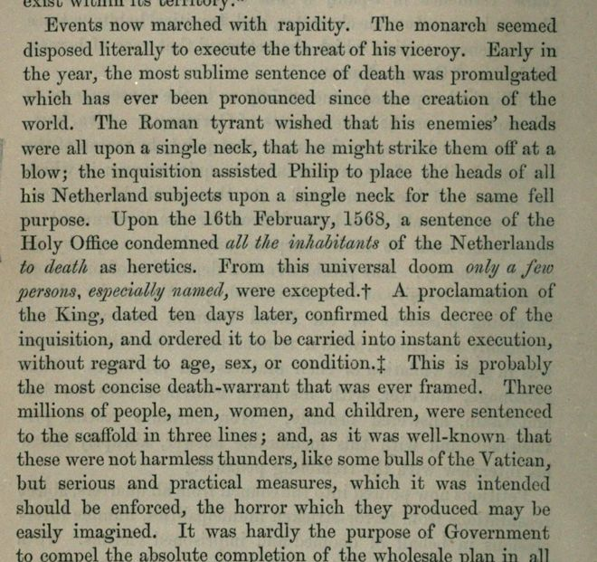

“The most sublime sentence of death” (vol. II, p. 158)
English: London 1856, vol. II, p. 158, scan. Italics as printed. Highlighted: Lecky’s quotation.

Events now marched with rapidity. The monarch seemed disposed literally to execute the threat of his viceroy. Early in the year, the most sublime sentence of death was promulgated which has ever been pronounced since the creation of the world. The Roman tyrant wished that his enemies’ heads were all upon a single neck, that he might strike them off at a blow; the inquisition assisted Philip to place the heads of all his Netherland subjects upon a single neck for the same fell purpose. Upon the 16th February, 1568, a sentence of the Holy Office condemned all the inhabitants of the Netherlands to death as heretics. From this universal doom only a few persons, especially named, were excepted. A proclamation of the King, dated ten days later, confirmed this decree of the inquisition, and ordered it to be carried into instant execution, without regard to age, sex, or condition. This is probably the most concise death-warrant that was ever framed. Three millions of people, men, women, and children, were sentenced to the scaffold in three lines; and, as it was well-known that these were not harmless thunders, like some bulls of the Vatican, but serious and practical measures, which it was intended should be enforced, the horror which they produced may be easily imagined. It was hardly the purpose of Government to compel the absolute completion of the wholesale plan in all its length and breadth, yet in the horrible times upon which they had fallen, the Netherlanders might be excused for believing that no measure was too monstrous to be fulfilled. At any rate, it was certain that when all were condemned, any might at a moment’s warning be carried to the scaffold, and this was precisely the course adopted by the authorities.
Lecky drops “without regard to age, sex, or condition” and the sentence “This is probably the most concise death-warrant that was ever framed”, and writes “the 16th of February”.
Backlinks
Every place in Rationalism in Europe that links to this page (generated automatically when the site is built).
- Chapter IV, Part II: note 39